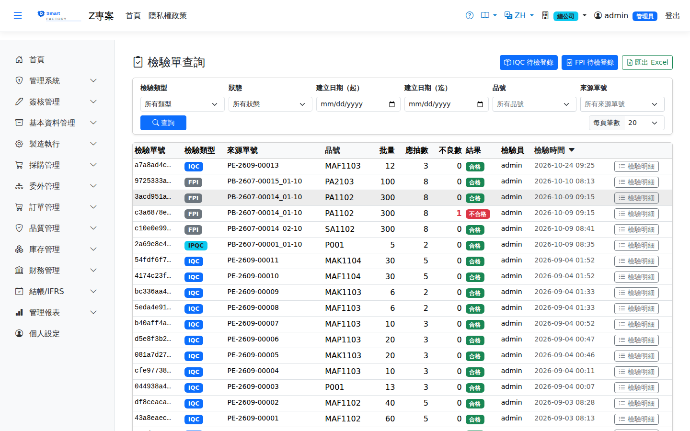

檢驗單由進貨/委外收貨（IQC）、工序報工（IPQC）或完工（FQC）觸發產生。抽樣依 MIL-STD-1916（Ac=0）自動計算樣本數，支援驗證水準（VL）切換與連續合格跳批。檢驗員輸入量測值/判定結果後判定合格或開立 NCR。行動裝置亦可執行檢驗。Inspection orders are triggered by a goods or outsource receipt (IQC), by reporting an operation (IPQC) or by completion (FQC). The sample size is calculated automatically to MIL-STD-1916 (Ac=0), with verification level (VL) switching and skip-lot after consecutive acceptances. The inspector enters the measured values or the judgement and then either accepts the lot or raises an NCR. Inspections can also be carried out on a mobile device.

檢驗單查詢畫面截圖（示意，實際欄位/資料依權限與查詢條件而異）Inspection order enquiry screenshot (illustrative; actual fields and data vary by permission and query criteria)
查詢Search
1查詢列輸入條件後點「查詢」；欄位標題可點擊排序，清單下方有分頁導航。Enter your criteria on the query bar and click "Search"; column headers can be clicked to sort, and the paging controls sit below the list.
2可依檢驗階段、狀態、品號、來源單號篩選。Can be filtered by inspection stage, status, item and source document number.
作業流程Process
IQC 進料檢驗（桌機登錄）IQC incoming inspection (desktop entry)
1點右上「IQC 待檢登錄」進入待檢清單，內容與手機端 IQC 待檢完全一致（已套用 VL 切換與跳批）。Click "IQC pending entry" at the top right to open the pending list, which is exactly the same as IQC pending on mobile (with VL switching and skip-lot already applied).
2選擇一筆進貨明細點「登錄」，側欄帶出批量與建議抽樣數；可調整驗證等級（VL-1～VL-7）。Select a receipt line and click "Enter"; the panel fills in the lot size and the suggested sample size, and the verification level (VL-1 to VL-7) can be changed.
3輸入實際抽樣數與不良數後送出。Ac=0：不良數 ≥ 1 即整批拒批。Enter the actual sample size and the number of defects and submit. With Ac=0, one defect or more rejects the whole lot.
4合格時系統自動把待驗倉庫存調撥至進貨明細指定的倉儲（沒填就用品號類別的預設倉儲），這是系統調撥、直接過帳不走簽核，並同時就放行量認列應付；兩者都沒有時判合格會被擋下並說明，不會記錄。不合格則庫存留在待驗倉，改由 NCR 處置。待檢清單包含已確認待上架的進貨，以及已上架到待驗倉、尚未檢驗的進貨。On acceptance the system transfers the stock out of the quarantine warehouse into the warehouse and location named on the receipt line (or the item category's default when the line has none). This is a system transfer that posts directly without approval, and the payable is accrued for the released quantity at the same time. If neither is set, the acceptance is refused with an explanation and nothing is recorded. On rejection the stock stays in quarantine and is handled through an NCR. The pending list covers receipts confirmed and awaiting put-away as well as receipts already put away into quarantine but not yet inspected.
FPI 首件檢查（桌機登錄）FPI first-piece inspection (desktop entry)
1點右上「FPI 待檢登錄」進入待首件清單。清單列出「工序設定需要首件檢查、且尚未通過 FPI」的派工——不論該派工是否做過備料都會列出。Click "FPI pending entry" at the top right to open the list of dispatches awaiting a first piece. It lists every dispatch whose operation requires a first-piece inspection and has not passed FPI yet — whether or not staging has been done.
2選一筆派工點「登錄」，側欄帶出派工量與建議抽樣數；可調整驗證等級（VL-1～VL-7）。Select a dispatch and click "Enter"; the panel fills in the dispatched quantity and the suggested sample size, and the verification level (VL-1 to VL-7) can be changed.
3輸入實際抽樣數與不良數後送出。Ac=0：不良數 ≥ 1 即判定不通過。Enter the actual sample size and the number of defects and submit. With Ac=0, one defect or more is a fail.
4通過 → 派工解鎖為「備料完成」可開工；不通過 → 派工轉為「暫停」（原因：首件不合格），暫停中的派工不會出現在待首件清單。排除異常後，在Pass → the dispatch is unlocked to "staging done" and work can start; fail → the dispatch goes on hold (reason: first-piece inspection failed), and dispatches on hold do not appear in the pending FPI list. Once the problem is sorted out, resume it under 派工作業 → 暫停處理Dispatch Operations → Handle hold恢復，派工回到「待首件」後再重新登錄首件。; the dispatch returns to "Pending FPI" and the first piece is entered again.
首件檢查閘口：First-piece inspection gate:工序若勾選「需首件檢查」，未通過 FPI 前 If the operation has "first-piece inspection required" ticked, then until FPI passes 一律無法開工work can never start——
桌機與手機、有無經過備料都一樣。判定依據是「該派工是否已有通過的首件檢驗單」，
不是派工目前的狀態，因此跳過備料直接開工也擋得住。首件登錄可由桌機或手機任一端完成。 —
on the desktop or on mobile, and whether or not staging was done. What counts is whether the dispatch already has a passing first-piece inspection,
not the dispatch's current status, so starting work directly without staging is still blocked. The first piece can be entered from either the desktop or a mobile device.
IPQC / FQC / RQC 待檢單補登Entering pending IPQC / FQC / RQC inspections
1查詢狀態為「待檢」的檢驗單，點明細開啟側欄。Query inspection orders with the status "pending" and click a line to open the panel.
2面板下方輸入實際抽樣數、不良數與備註後送出結果。Enter the actual sample size, the number of defects and any notes at the bottom of the panel and submit the result.
3IPQC 判定不合格時，系統自動將生產中的相關派工改為暫停（原因：巡檢不合格）。品管確認後於When IPQC fails, the system automatically puts the related running dispatch on hold (reason: in-process inspection failed). After QC has confirmed, resume it under 派工作業 → 暫停處理Dispatch Operations → Handle hold恢復；品質原因的暫停須有檢驗單更新權限才能恢復。; a hold for a quality reason needs update permission on inspection orders to be resumed.
執行檢驗（行動裝置）Carrying out an inspection (mobile)
1開啟待檢單，系統已依規範帶出檢驗項目與抽樣數。Open a pending inspection order; the system has already filled in the inspection items and the sample size from the spec.
2逐項輸入量測值或判定結果；超規項目自動標示。Enter the measured value or judgement for each item; anything out of spec is flagged automatically.
3全部合格→判定合格結案（IQC 合格量入庫、FQC 放行繳庫）。All pass → judged accepted and closed (the IQC accepted quantity goes into stock, FQC releases the receipt).
4不合格→開立 NCR 進入處置流程。Fail → an NCR is raised and goes into the disposition process.
IQC 待檢也包含委外收貨（單號旁標「委外」）：委外收回品與一般進貨一樣，未合格前只能上架到待驗倉，合格後自動放行到一般倉，並回寫委外派工完工量。The IQC queue also includes outsource receipts (marked "Outsource" next to the number): like ordinary receipts, returned goods can only be put into quarantine until they pass, are then released to a normal warehouse automatically, and update the outsourced dispatch's completed quantity.
列印Printing
清單每列的 按鈕（需有列印權限）在新分頁開啟含 QR Code 的列印單，可直接列印或另存 PDF。檢驗單列印含來源單據、產品品名、批量與抽樣數，以及各檢驗項目的規格上下限、目標值、實測值與判定，可當現場量測記錄表。The button on each row of the list (print permission required) opens a printout with a QR code in a new tab, ready to print or save as PDF. The inspection printout shows the source document, product name, lot size and sample size, and for each item the spec limits, target, measured value and result, so it can serve as the shop-floor measurement record.
欄位說明Field reference
查詢條件Query criteria
| 條件Condition | 說明Guide |
|---|
| 檢驗類型Type | IQC 進料／IPQC 製程／FQC 完工／RQC 退貨IQC incoming / IPQC in-process / FQC final / RQC return |
| 狀態Status | 依檢驗單狀態篩選Filters by inspection order status |
| 建立日期（起 / 迄）Created between (from / to) | 依檢驗單建立日期區間篩選Filters by the inspection order creation date range |
| 品號Item | 只看單一料件的檢驗單Inspection orders for one item only |
| 來源單號Source Doc | 只看某張進貨單、工單或派工產生的檢驗單；下拉只列本廠檢驗單出現過的來源單號，新的在前。檢驗單本身沒有單號，找單請用這個條件Inspection orders raised from one receipt, work order or dispatch only. The list shows only source documents that appear on this plant's inspection orders, newest first. Inspection orders have no number of their own, so use this criterion to find one |
清單欄位List columns
| 欄位Field | 說明Guide |
|---|
| 檢驗單號Order ID | 系統採番，不可修改Numbered by the system; not editable |
| 檢驗類型Type | 該單所屬的檢驗階段Inspection stage the order belongs to |
| 來源單號Source doc No | 觸發此次檢驗的來源單據（進貨單、工單、退貨單等），可回溯追查The document that triggered this inspection (goods receipt, work order, sales return …), for tracing back |
| 品號Item | 受檢的料件Item being inspected |
| 批量Lot size | 本次送驗的批次數量，為抽樣數的計算基準Lot size submitted for inspection, the basis for calculating the sample size |
| 應抽數Sample Size | 依檢驗規範的抽樣計畫算出的樣本數；抽樣狀態（正常／加嚴／減量／跳批）會改變此數Sample size from the sampling plan in the inspection spec; the sampling state (normal / tightened / reduced / skip-lot) changes it |
| 不良數Defects | 樣本中判定不合格的件數Number of pieces in the sample judged nonconforming |
| 結果Result | 合格／不合格。不合格會影響下一批的抽樣狀態，並可開立 NCR 進行處置Accepted or rejected. A rejection affects the sampling state of the next lot, and an NCR can be raised to deal with it |
| 檢驗員 / 檢驗時間Inspector / Inspection time | 執行檢驗的人員與完成時間Who carried out the inspection and when it finished |
不合格品單（NCR）Non-Conformance Reports、檢驗規範Inspection Specs
注意：Note:FQC 未合格前完工入庫會被硬性阻擋；IQC 不合格量不可入良品倉。 Completion receipt is hard-blocked until FQC passes; an IQC reject quantity cannot go into the good-stock warehouse.